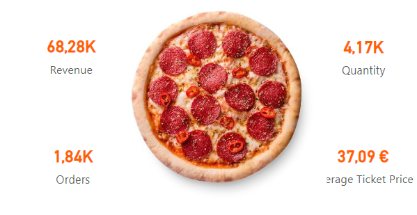
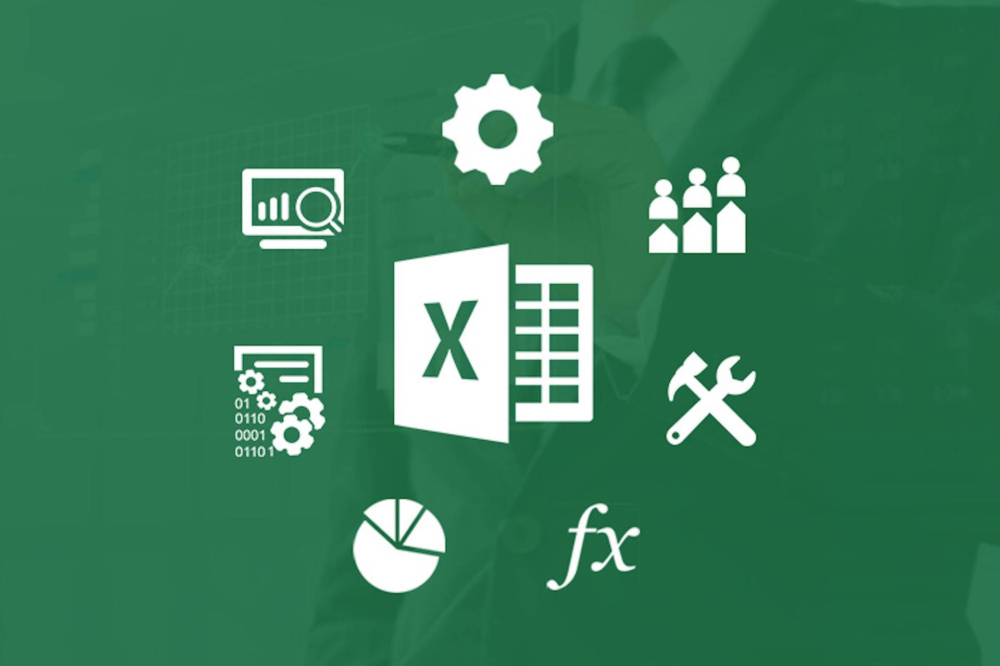

Pizza Sales Dashboard is
designed to analyze and visualize pizza sales data. It aims to provide
insights into sales trends, customer behavior, and pizza types. The analysis tracked pizza orders over time.
It identifies peak sales periods and seasonal trends. These insights help understand customer behavior. Armed with these
insights, the organization can optimize menu offerings,
marketing strategies, and operational efficiency to serve their customers better and continue to be their
go-to choice for pizza.

The purpose of the dashboard is to visualize and analyze sales data from an eCommerce dataset.
The dashboard helps identify sales hotspots and regional trends, which product categories
contribute most to overall sales, highlighting the best-performing products.
It also shows the percentage distribution of sales across different regions
(e.g., Central, East, South, West) and provides insights into regional market share.
And also provides insights into understanding shipping preferences and their impact on sales.

ML model predicts predicts how much someone might spend on a car based on certain details about them, like their name, email,
where they live,
gender, age, salary, credit card debt, and net worth. The focus is on predicting car prices using a method called regression.
Then compare three different ways of making these predictions: Artificial Neural Networks (ANN), Multiple Linear Regression,
Lasso, and Random Forest and to figure out which method works best for predicting car prices.
Analyzed COVID-19 data to predict the total cases using linear regression, decision tree, and K-nearest neighbors
(KNN) regression methods. Evaluated the regression summary to assess the performance of each method. Additionally
clustered the death rate according to countries using K-means clustering to gain insights into the patterns and
variations.
Used SQL queries to explore and analyse covid dataset to extract information efficiently. Transformed and
filtered data by using aggregating functions to improve reporting functions. Joined COVID deaths and vaccination tables using SQL joints to integrate
the datasets and analyse population vaccinated, death percentage and new cases.

A Dashboard showing bike Sales segmented by various customer demographics and behaviors.